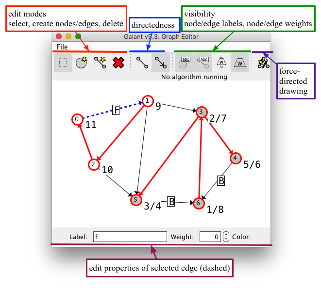
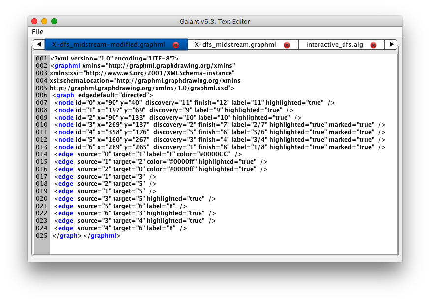
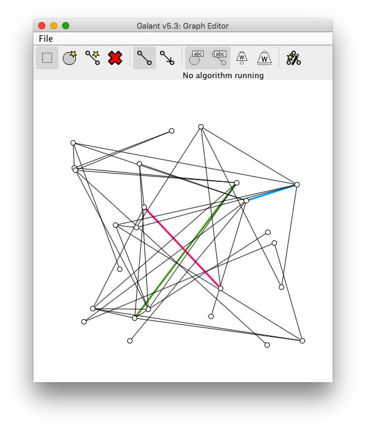
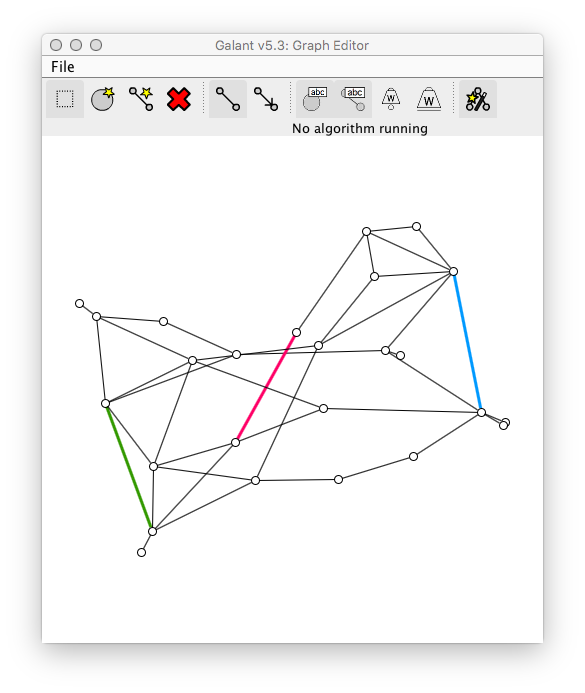
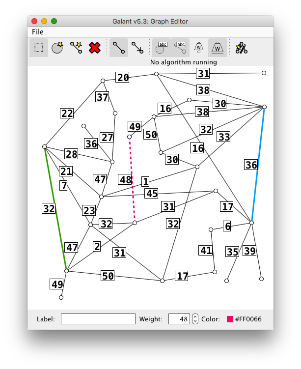
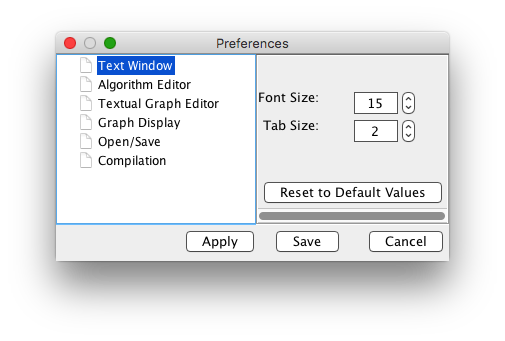
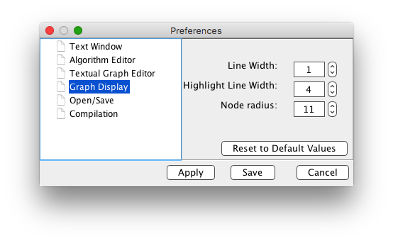

What follows are instructions for interacting with the Galant graphical user interface, primarily for creating, editing, saving and loading graphs and animations and for executing animations.
Galant provides three major components across two windows:
a text window that can serve two distinct purposes –
as an editor of algorithms
as an editor of GraphML representations of graphs
a graph window that displays the current graph (independent of whether the text window shows an algorithm or the GraphML representation of the graph)
It is usually more convenient to edit algorithms offline using a program editor such as Emacs or Notepad++, setting preferences so that files with the .alg extension are treated as if they were Java source files. The primary use of the text editor is to correct minor errors and to see the syntax highlighting related to Galant API functions and macros. The graph window is the primary mechanism for editing graphs. One exception is when precise adjustments node positions are desired. Weights and labels are sometimes also easier to edit in the text window.

Graph window: add/delete nodes and edges, move nodes, etc.

Text window: GraphML representation.
These components operate in two modes: edit mode and animation mode. Edit mode allows the user to modify graphs – see Sec. 1.3, or algorithms – see Sec. 1.4. Animation mode disables all forms of modification, allowing the user to progress through an animation by stepping forward or backward, as described in Sec. 1.5.
Opened graph and algorithm files are displayed in the text window, which has tabs that allow the user to switch among different algorithms/graphs. New algorithms are created using the icon that looks like a page of text at the top left of the window; new graphs are created using the graph/tree icon to the left of that. More commonly, algorithm and graph files are loaded via the File→Open browser dialog. The File drop-down menu also allows saving of files and editing of preferences. Algorithm files have the extension .alg and graph files the extension .graphml.
Fig. [fig:user_interface] shows both the graph window (top) and the text window (bottom). Annotations on the graph window describe the components of the window that can be used to edit a graph visually.
Graphs can be edited in their GraphML representation using the text window or visually using the graph window. These editors are linked: any change in the visual representation is immediately reflected in the text representation (and will overwrite what was originally there); a change in the GraphML representation will take effect in the visual representation only when the file is saved.
An improperly formatted GraphML file loaded from an external source will result in an error. Galant reports errors of all kinds (during reading of files, compilation of animation programs or execution of animations) by displaying a pop up window that allows the user to choose whether to continue (and usually return to a stable state) or quit the program. Error information, including a stack trace, is also displayed on the console.
The graph window, as illustrated at the top of Fig. [fig:user_interface], has a toolbar with four sections:
Graph edit mode – this includes the select, create node, create edge, and delete buttons. Only one button is active at any time; it determines the effect of a user’s interaction (mouse clicking, dragging, etc.) with the window. If there are conflicts in selection of objects, nodes with higher id numbers have precedence (are above those with lower id numbers) and nodes have precedence over edges (are above edges – so that the lines corresponding to edges are hidden below the filled circles corresponding to nodes).
Select. A mouse click selects the graph component with highest precedence. If the component is a node, it is shaded light blue; if it’s an edge, it becomes dashed. The in-line editor at the bottom of the graph window allows editing of the component’s label, weight, and color. This is the default mode. The square should be outlined in gray unless the user wants to alter the graph in some way. If any other mode is active, e.g., delete, the consequences can be unpleasant (there is currently no "undo" mechanism). A future release will have "modeless" editing.
Create node. A node is created at the location of a mouse click if there is not already a node there. If another node is present it is simply selected.
Create edge. Two clicks are required to create an edge. The first falls on the desired source node and the second on the target node. The line representing the edge is shown after the first click. If the first click does not land on a node, no edge is created. If the second click does not land on a node, creation of the edge is canceled.
Delete. A mouse click deletes the highest-precedence component at the mouse location. If a node is deleted, all of its incident edges are deleted as well.
Directedness toggles – These change both the interpretation and the display of the graph between directed and undirected. Pressing the undirected (line without arrows) button causes all edges to be interpreted as undirected: this means that, when the code calls for all incoming/outgoing edges, all incident edges are used. Undirected edges are displayed as simple lines.
Pressing the directed (line with arrow) button causes the macros for_incoming, for_outgoing, and for_adjacent to have three distinct meanings (they are all the same for undirected graphs): Incoming edges have the given node as target, outgoing as source, and adjacent applies to all incident edges.
Display toggles – The four display toggles turn on/off the display of node/edge labels and node/edge weights. A shaded toggle indicates that the corresponding display is on. When Galant is executed for the first time, all of these are on, but their setting persists from session to session. Labels and weights are also all displayed at the beginning of execution of an animation. The animation program can choose to hide labels and/or weights with simple directives. Hiding is often unnecessary – the graphs that are subjects of the animations typically have only the desired attributes set.
Force directed drawing button – Applies Hu’s force directed algorithm to the graph. Pushing the button a second time causes the drawing to revert to its previous state. Fig. [fig:force_directed] illustrates the use of force directed drawing to massage a randomly generated graph for convenient use in animations. The graph was generated randomly as a list of edges with weights and converted to graphml using a simple script. Galant, when reading the graph initially, assigned random positions to the nodes.
| Ctrl-n | create a new node in a random position |
|---|---|
| Ctrl-e | create a new edge; user is prompted for id’s of the nodes to be connected |
| Ctrl-i | do a smart repositioning (force-directed) of nodes of the graph, useful when positions were chosen randomly |
| Del-n | (hold delete key when typing n) delete a node; user is prompted for id |
| Del-e | delete an edge; user is prompted for id’s of the endpoints |
| Ctrl-ℓ | toggle display of node labels |
| Ctrl-L | toggle display of edge labels |
| Ctrl-w | toggle display of node weights |
| Ctrl-W | toggle display of edge weights |
| Ctrl-d | toggle graph directedness |
  
(a) A graph from an external random generator.
(b) Force directed layout applied.
(c) User moved nodes for an even better layout.
Table 1 lists keyboard shortcuts for various editing operations.
Algorithms can be edited in the text window. The editor uses Java keyword highlighting (default blue) and highlighting of Galant API fields and methods (default green). Since the current algorithm editor is fairly primitive (no search and replace, for example), it is more efficient to edit animation code offline using a program editor – for example emacs with Java mode turned on. The Galant editor is, however, useful for locating and correcting minor errors. For more details on how to compose animation code, see the programmer guide (Section 2).
To animate an algorithm the code for it must be compiled and then run via the algorithm controls – the bottom tabs on the text window shown in Fig. 2. The algorithm runs on the active graph, the one currently displayed on the graph window, also shown in Fig. 2. While the algorithm is running, its text is grayed out to indicated that it cannot be edited. If there are errors in compilation these will show up on the console (terminal from which Galant was run) and in a dialog box that allows the user to ask for more details and decide whether to exit Galant or not. The console also displays the what the code looks like after macro replacement in case obscure errors were the result of unexpected macro expansion. Line numbers in the macro-expanded code match those of the original so that all errors reported by the Java compiler will refer to the correct line number in the original Galant code. Runtime errors also open the above mentioned dialog box.
When the user initiates execution of an animation by pushing the Run button the animation program steps forward until displays the next animation event or, if a beginStep() call has marked the start of a sequence of events, until it reaches the next endStep() call. It then pauses execution and waits for the user to decide whether to step forward, step backward, or exit. A step forward resumes execution while a step backward returns the display to a previous state. The algorithm resumes execution only when the display state indicated by the user’s sequence of forward and backward steps (f − b, where f is the number of forward and b the number of backward steps) exceeds the algorithm state, the number of animation steps the algorithm has executed. The user controls forward and backward steps using either the buttons at the bottom of the graph window (shown in Fig. 2) or the right/left arrow keys. During the execution of the animation, all graph editing functions are disabled. These are re-enabled when the user exits the animation by pressing the red X button or the Esc (escape) key on the terminal.
Galant preferences can be accessed via the File→Preferences menu item or by using the keyboard shortcut Ctrl-P (Cmd-P for Mac). Preferences that can be edited are:
Default directories for opening and saving files (Open/Save).
Directory where compiled animation code is stored (Compilation).
Font size and tab size for text window editing (Editors).
Colors for keyword and Galant API highlighting (Algorithm Editor).
Color for GraphML highlighting (Textual Graph Editor).
Node radius (Graph Display); when the radius is below a threshold (9 pixels), node id’s are not displayed; this is useful when running animations on large graphs.
Edge width and node boundary width, both normal and highlighted/colored (Graph Display).
(a) syntax highlight colors – same color chooser as for editing node/edge colors
 
(b) text font size and tab spaces (c) line widths and node radius
(d) default directory for opening and saving files
Fig. 6 shows the four preference panels of most interest to the user.
This is an external document. It appears both as an appendix in the technical report and as a separate document.